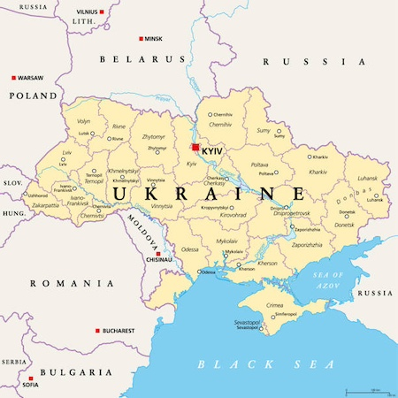
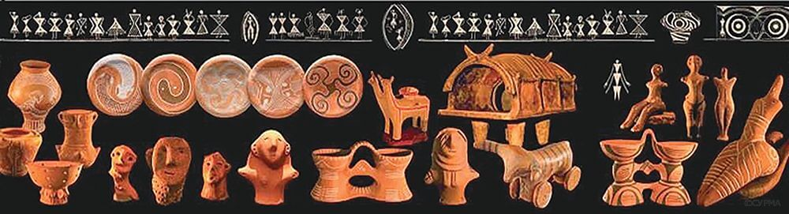
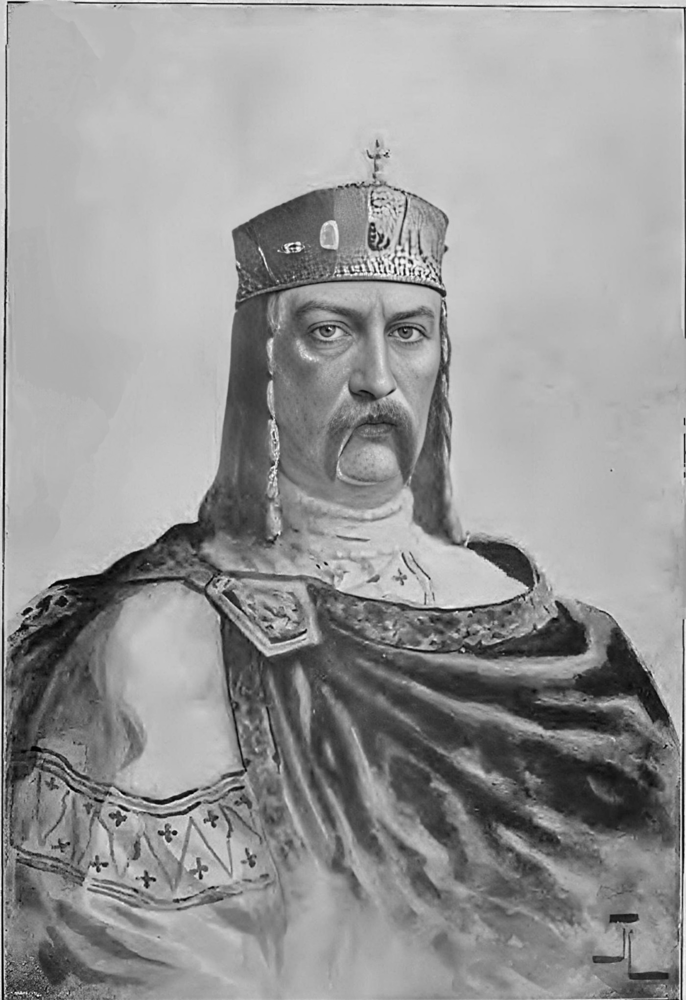
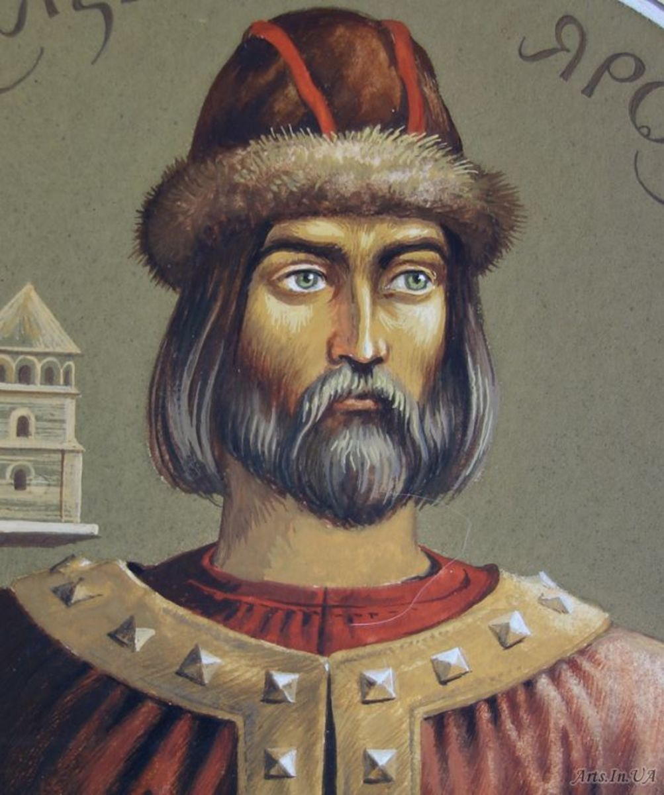
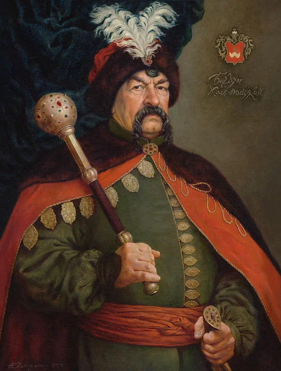

Україна: Історія, культура та сучасний розвиток
Вступ
Україна — одна з найбільших і найрізноманітніших країн Європи, розташована в її серці. Її історія налічує тисячі років, а культурна спадщина є надзвичайно багатою. Сучасна Україна є незалежною державою, яка проходить шлях трансформацій і реформ, намагаючись знайти своє місце в глобальному контексті.
Історія України
Історія України є однією з найцікавіших і найскладніших у Європі. Вона характеризується численними змінами в політичних режимах, боротьбою за незалежність і культурними досягненнями.
Давні часи
Відзначено багатою археологічною спадщиною, перші осередки цивілізації на території України з'явилися ще в епоху неоліту. Трипільська культура, що існувала з 5400 до 2700 р. до н.е., є однією з найстаріших і найрозвиненіших у Європі. Ця культура залишила після себе вражаючі археологічні знахідки, зокрема, великі поселення з добре спланованими будівлями.
Київська Русь
 У IX столітті утворилася Київська Русь — перша східнослов'янська держава. Київ став її столицею, і під час правління Володимира Великого (980–1015) та Ярослава Мудрого (1019–1054) Київська Русь досягла своєї вершини. В цей період розвивалася культура, мистецтво, наука, і був створений перший письмовий кодекс — Руська Правда.
Литовсько-польське панування
Після розпаду Київської Русі в XIII столітті територія сучасної України потрапила під контроль Литви та Польщі. Литовці зберігали автономію українських земель, але польська культура та адміністрація мали значний вплив. Це призвело до численних культурних та соціальних змін.
Козацька доба
У середині XVI століття почалася боротьба за незалежність, яка призвела до утворення Гетьманщини. Богдан Хмельницький очолив козацьке повстання 1648 року, яке стало відправною точкою для створення автономного козацького державного утворення. Цей період був важливим для формування національної ідентичності українців.
Російська імперія та Радянський Союз
У XVIII столітті значна частина України потрапила під контроль Російської імперії. Після Жовтневої революції 1917 року Україна проголосила незалежність, але невдовзі стала частиною Радянського Союзу. Період радянської влади був сповнений випробувань, зокрема Голодомором 1932–1933 років, який забрав життя мільйонів українців.
Незалежність та сучасність
1 грудня 1991 року Україна проголосила свою незалежність після розпаду Радянського Союзу. Відтоді країна розпочала шлях до демократичних перетворень, економічного розвитку та інтеграції в європейські структури. Сучасна Україна стикається з численними викликами, але продовжує активно розвиватися.
Культура та традиції
Українська культура є надзвичайно багатою та різноманітною, з глибокими історичними коренями і сучасними впливами.
Мова та література

Офіційною мовою України є українська, що є частиною слов'янської мовної групи. Українська література має давні традиції, починаючи з періоду Київської Русі, коли з'явилася писемність. Тарас Шевченко, Леся Українка та Іван Франко є видатними постатями в українській літературі. Тарас Шевченко, зокрема, вважається національним поетом, чиї роботи стали символом боротьби за незалежність.
Мистецтво та музика
Українське мистецтво відрізняється яскравими кольорами та традиційними мотивами. Вишиванки, петриківський розпис та ікони є важливими елементами українського декоративного мистецтва. Музика також займає важливе місце в культурі. Народні пісні, танці, такі як гопак, і сучасна музика складають різноманітний культурний ландшафт України.
Свята та обряди
Українці зберігають численні свята і обряди, які є важливою частиною їхнього життя. Різдво, Великдень, Івана Купала та Масляна — це лише кілька з них. Кожне свято має свої унікальні традиції та ритуали, які передаються з покоління в покоління.
Природа та туризм
Україна відзначається великою різноманітністю природних ландшафтів. Країна має все, що може зацікавити туристів, від гірських хребтів до прибережних зон і міст.
Карпати
Карпати — це гірський масив, який є ідеальним місцем для любителів природи. Високі вершини, густі ліси, численні річки та озера роблять цей регіон популярним для походів, кемпінгу та активного відпочинку. Взимку Карпати перетворюються на популярний курорт для лижників і сноубордистів.
Крим
Крим — це півострів на південь від материкової частини України, який славиться своїм різноманітним кліматом та мальовничими пейзажами. Кримські гори, пляжі та історичні пам'ятки, такі як Ластівчине гніздо і Херсонес Таврійський, приваблюють туристів з усього світу.
Міста та пам'ятки
Київ, Львів, Одеса і Харків є основними культурними та економічними центрами України. Київ з його архітектурними пам'ятками, такими як Софійський собор і Києво-Печерська лавра, є серцем країни. Львів, зі своєю старовинною архітектурою та культурною спадщиною, є популярним туристичним напрямком. Одеса, з її морським кліматом і пляжами, пропонує відпочинок на узбережжі Чорного моря.
Політика та економіка
Україна проходить через складний період реформ і модернізації. Після здобуття незалежності країна робить великі кроки в напрямку політичної та економічної стабільності.
Політична ситуація
Українська політика є дуже динамічною. Після Революції Гідності 2014 року, яка була спрямована на боротьбу з корупцією та поліпшення демократичних процесів, країна зосередилася на реформах і інтеграції з Європейським Союзом. Проте політична ситуація залишається напруженою, зокрема через конфлікти на сході країни та вплив зовнішніх сил.
Економіка
Економіка України має значний потенціал, зокрема в аграрному секторі, IT-індустрії та енергетиці. Однак країна також стикається з проблемами, такими як інфляція, безробіття і політична нестабільність. Реформи, що реалізуються, спрямовані на покращення бізнес-клімату, боротьбу з корупцією та модернізацію інфраструктури.
Освіта та наука
Освіта та наука є важливими компонентами розвитку будь-якої країни. В Україні існує численна мережа освітніх закладів, від шкіл до університетів, а також активно розвивається науковий потенціал.
Система освіти
Система освіти в Україні включає загальноосвітні школи, професійно-технічні навчальні заклади та вищі навчальні заклади. Основні рівні освіти — це дошкільна, загальна середня, профтехосвіта та вища освіта. Сучасні реформи освіти спрямовані на покращення якості навчання, впровадження нових методик та інтеграцію з міжнародними стандартами.
Наука і дослідження
Українська наука має багатий спадок і продовжує робити значний внесок у світову науку. У країні працюють численні наукові установи, інститути та лабораторії, які займаються різноманітними дослідженнями в галузях фізики, хімії, біології, медицини та інших. Протягом останніх років Україні вдалося досягти успіхів у космічних дослідженнях, інформаційних технологіях та медицині.
Міжнародні відносини
Україна активно веде зовнішню політику, яка включає в себе як співпрацю з міжнародними організаціями, так і розвиток двосторонніх відносин з різними країнами.
Європейський Союз
Україна прагне до інтеграції з Європейським Союзом, що стало одним з основних зовнішньополітичних пріоритетів. Угода про асоціацію з ЄС, підписана у 2014 році, визначила нові рівні співпраці в економічній та політичній сферах.
Співпраця з США та іншими країнами
Сполучені Штати Америки є важливим партнером України у багатьох сферах, зокрема в економіці, безпеці та гуманітарній допомозі. Крім того, Україна підтримує відносини з рядом інших країн, включаючи Канаду, Туреччину та країни Острівного регіону.
Суспільство та культура
Суспільство України є надзвичайно різноманітним, з багатими культурними традиціями і сучасними соціальними змінами.
Демографічні особливості
Україна має багатонаціональне населення, яке складається з українців, росіян, євреїв, татар та представників інших етнічних груп. Демографічна ситуація в Україні є складною, зокрема через міграцію, старіння населення і низький рівень народжуваності.
Культурні особливості
Культурне життя України багатогранне і включає в себе традиційні свята, мистецькі події та сучасні культурні явища. В Україні проходять численні фестивалі, театральні постановки, виставки та концерти, що відображають різноманітність культурних впливів і традицій.
Висновок
Україна є країною з надзвичайно багатою історією, культурною спадщиною та природними ресурсами. Незважаючи на численні виклики, з якими вона стикається, країна продовжує розвиватися і зберігати свою унікальність. Від гір Карпат до величних міст і культурних пам'яток, Україна залишається важливим і цікавим об'єктом для вивчення та дослідження.